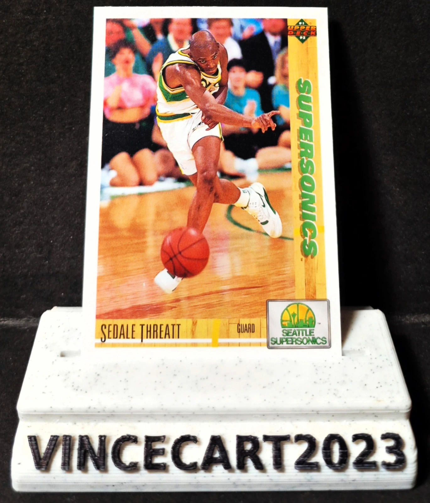

🏀 Carte NBA Sedale Threatt #110 – Upper Deck 1991-92 – Seattle SuperSonics 🏀
1,10 €
Je vends cette carte NBA Sedale Threatt #110, issue de la collection Upper Deck 1991-92. 📋 Caractéristiques : Joueur : Sedale Threatt Équipe : Seattle SuperSonics Collection : Upper Deck 1991-92 Numéro : #110 Carte officielle Upper Deck État : Très bon (voir photos) ⭐ Meneur de jeu expérimenté, Sedale Threatt a évolué avec les 76ers, Bulls, SuperSonics et Lakers au cours de sa carrière NBA. Une belle carte vintage qui trouvera sa place dans toute collection consacrée aux années 90. 📦 La carte sera expédiée avec soin sous sleeve